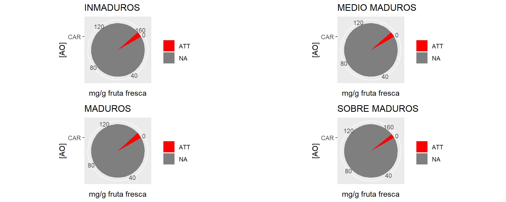
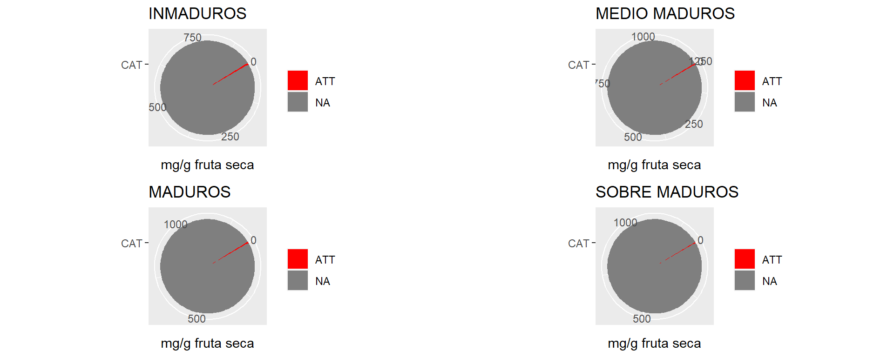

Acids
Acidos orgánicos en peso fresco
Concentración del perfíl de ácidos orgánicos a distintos estados de Maturity
## Error in eval(expr, envir, enclos): object 'dataAT' not found## Error in eval(expr, envir, enclos): object 'dataato' not found## Error in eval(expr, envir, enclos): object 'aci6s' not foundTabla descriptiva
## CAR MAD N CONF sd se ci
## 1 ATT I 3 1.779200 0.05079843 0.02932848 0.12619028
## 2 ATT MM 3 1.606400 0.02789695 0.01610631 0.06929987
## 3 ATT M 3 1.828267 0.20390638 0.11772541 0.50653154
## 4 ATT SM 3 1.384533 0.08352756 0.04822466 0.20749396
## 5 <NA> I 24 6.659458 8.13360208 1.66026457 3.43451894
## 6 <NA> MM 24 6.325996 5.04552019 1.02991250 2.13053632
## 7 <NA> M 24 6.354450 5.28334578 1.07845844 2.23096126
## 8 <NA> SM 24 6.954696 5.87462880 1.19915358 2.48063818Evolución del perfíl de ácidos orgánicos en la maduración

Acidos orgánicos Totales
Concentración de ácidos orgánicos totales a distintos estados de Maturity.

Tabla descriptiva totales
## CAR MAD N TOTALF sd se ci
## 1 ACIDS I 6 26.637833 1.990422128 0.812586431 2.08881992
## 2 ACIDS MM 6 25.303985 1.788299193 0.730070088 1.87670491
## 3 ACIDS M 6 25.417800 0.434147222 0.177239861 0.45560957
## 4 ACIDS SM 6 27.818783 1.061812544 0.433483156 1.11430393
## 5 CATIONS I 3 3.590633 1.325520714 0.765289741 3.29277599
## 6 CATIONS MM 3 2.560667 0.313536989 0.181020665 0.77886906
## 7 CATIONS M 3 2.603833 0.308997643 0.178399872 0.76759270
## 8 CATIONS SM 3 2.214367 0.394508331 0.227769491 0.98001302
## 9 STAT I 3 1.721122 0.263331774 0.152034671 0.65415239
## 10 STAT MM 3 1.447652 0.116290944 0.067140608 0.28888272
## 11 STAT M 3 1.541716 0.132691311 0.076609364 0.32962349
## 12 STAT SM 3 1.909504 0.007733365 0.004464861 0.01921074
## 13 SUGARS I 6 45.629848 4.811537421 1.964301927 5.04939885
## 14 SUGARS MM 6 36.768222 5.141036221 2.098819248 5.39518664
## 15 SUGARS M 6 39.159254 2.599418252 1.061208058 2.72792216
## 16 SUGARS SM 6 53.119643 1.842284986 0.752109696 1.93335952## Linear mixed-effects model fit by REML
## Data: dataAT
## Log-restricted-likelihood: -39.09968
## Fixed: TOTALF ~ MAD
## (Intercept) MADMM MADM MADSM
## 26.637833 -1.333847 -1.220033 1.180950
##
## Random effects:
## Formula: ~1 | REP
## (Intercept) Residual
## StdDev: 0.5444281 1.371765
##
## Number of Observations: 24
## Number of Groups: 3

##
## Shapiro-Wilk normality test
##
## data: e
## W = 0.97767, p-value = 0.8493Anova
## numDF denDF F-value p-value
## (Intercept) 1 18 3901.697 <.0001
## MAD 3 18 4.454 0.0165Test de Tukey
## $emmeans
## MAD emmean SE df lower.CL upper.CL
## I 26.6 0.642 2 23.9 29.4
## MM 25.3 0.642 2 22.5 28.1
## M 25.4 0.642 2 22.7 28.2
## SM 27.8 0.642 2 25.1 30.6
##
## Degrees-of-freedom method: containment
## Confidence level used: 0.95
##
## $contrasts
## contrast estimate SE df t.ratio p.value
## I - MM 1.334 0.792 18 1.684 0.3602
## I - M 1.220 0.792 18 1.540 0.4354
## I - SM -1.181 0.792 18 -1.491 0.4629
## MM - M -0.114 0.792 18 -0.144 0.9989
## MM - SM -2.515 0.792 18 -3.175 0.0246
## M - SM -2.401 0.792 18 -3.032 0.0331
##
## Degrees-of-freedom method: containment
## P value adjustment: tukey method for comparing a family of 4 estimates
Conclusiones
Existen diferencias significativas entre estados de Maturity para los ácidos totales detectados en este trabajo.
Ácido Tartárico
Modelo y supuestos
## Error in matrix(unlist(value), nrow = nrow(data), dimnames = list(row.names(data), : length of 'dimnames' [2] not equal to array extent## Error in eval(expr, envir, enclos): object 'mtar2' not found## Error in eval(expr, envir, enclos): object 'mtar2' not found## Error: object 'tar_ajuste' not found## Error in eval(expr, envir, enclos): object 'tar_ajuste' not found## Error in eval(expr, envir, enclos): object 'HVtar' not found## Error in eval(expr, envir, enclos): object 'tar_ajuste' not found## Error in eval(expr, envir, enclos): object 'QQtar' not found## Error in eval(expr, envir, enclos): object 'mtar2' not found## Error in eval(expr, envir, enclos): object 'mtar2' not found## Error in eval(expr, envir, enclos): object 'mtar2' not found##
## Shapiro-Wilk normality test
##
## data: e
## W = 0.97767, p-value = 0.8493Anova
## Error in eval(expr, envir, enclos): object 'mtar2' not foundTest de Tukey
## Error in eval(expr, envir, enclos): object 'mtar2' not found## $emmeans
## method emmean SE df lower.CL upper.CL
## potter_A 49.2 6.48 9 34.584 63.9
## potter_B 48.4 6.48 9 33.754 63.1
## rod 15.5 6.48 9 0.856 30.2
##
## Confidence level used: 0.95
##
## $contrasts
## contrast estimate SE df t.ratio p.value
## potter_A - potter_B 0.83 9.16 9 0.091 0.9955
## potter_A - rod 33.73 9.16 9 3.682 0.0126
## potter_B - rod 32.90 9.16 9 3.592 0.0145
##
## P value adjustment: tukey method for comparing a family of 3 estimates
Conclusiones
Existen diferencias significativas entre estados de Maturity. El estado sobre maduro es el único que presenta ácido tartárico detectable.
Ácido málico
Modelo y supuestos
## Error in matrix(unlist(value), nrow = nrow(data), dimnames = list(row.names(data), : length of 'dimnames' [2] not equal to array extent## Error in eval(expr, envir, enclos): object 'mmal2' not found## Error in eval(expr, envir, enclos): object 'mmal2' not found## Error: object 'mal_ajuste' not found## Error in eval(expr, envir, enclos): object 'mal_ajuste' not found## Error in eval(expr, envir, enclos): object 'HVmal' not found## Error in eval(expr, envir, enclos): object 'mal_ajuste' not found## Error in eval(expr, envir, enclos): object 'QQmal' not found## Error in eval(expr, envir, enclos): object 'mmal2' not found## Error in eval(expr, envir, enclos): object 'mmal2' not found## Error in eval(expr, envir, enclos): object 'mmal2' not found##
## Shapiro-Wilk normality test
##
## data: e
## W = 0.97767, p-value = 0.8493Anova
## Error in eval(expr, envir, enclos): object 'mmal2' not foundTest de Tukey
## Error in eval(expr, envir, enclos): object 'mmal2' not found## Error in eval(expr, envir, enclos): object 'Compmal' not found## Error in eval(expr, envir, enclos): object 'Compmal' not foundConclusiones
Existen diferencias significativas entre estados de Maturity. En el estado maduro se presentó el pico de concentración de ácido málico.
Ácido quínico
Modelo y supuestos
## Error in matrix(unlist(value), nrow = nrow(data), dimnames = list(row.names(data), : length of 'dimnames' [2] not equal to array extent## Error in eval(expr, envir, enclos): object 'mqui2' not found## Error in eval(expr, envir, enclos): object 'mqui2' not found## Error: object 'qui_ajuste' not found## Error in eval(expr, envir, enclos): object 'qui_ajuste' not found## Error in eval(expr, envir, enclos): object 'HVqui' not found## Error in eval(expr, envir, enclos): object 'qui_ajuste' not found## Error in eval(expr, envir, enclos): object 'QQqui' not found## Error in eval(expr, envir, enclos): object 'mqui2' not found## Error in eval(expr, envir, enclos): object 'mqui2' not found## Error in eval(expr, envir, enclos): object 'mqui2' not found##
## Shapiro-Wilk normality test
##
## data: e
## W = 0.97767, p-value = 0.8493## Error in `contrasts<-`(`*tmp*`, value = contr.funs[1 + isOF[nn]]): contrasts can be applied only to factors with 2 or more levelsAnova
## Error in eval(expr, envir, enclos): object 'mqui2' not foundTest de Tukey
## Error in eval(expr, envir, enclos): object 'mqui2' not found## Error in eval(expr, envir, enclos): object 'Compqui' not found## Error in eval(expr, envir, enclos): object 'Compqui' not foundConclusiones
Se observa un marcado aumento de ácido quínico con la maduración hasta frutos maduros. Luego en frutos sobre maduros Frutos medio maduros presentan gran variabiliad.
Ácido succinico
Modelo y supuestos
## Error in matrix(unlist(value), nrow = nrow(data), dimnames = list(row.names(data), : length of 'dimnames' [2] not equal to array extent## Error in eval(expr, envir, enclos): object 'msuc2' not found## Error: object 'suc_ajuste' not found## Error in eval(expr, envir, enclos): object 'suc_ajuste' not found## Error in eval(expr, envir, enclos): object 'HVsuc' not found## Error in eval(expr, envir, enclos): object 'suc_ajuste' not found## Error in eval(expr, envir, enclos): object 'QQsuc' not found## Error in eval(expr, envir, enclos): object 'msuc2' not found## Error in eval(expr, envir, enclos): object 'msuc2' not found## Error in eval(expr, envir, enclos): object 'msuc2' not found##
## Shapiro-Wilk normality test
##
## data: e
## W = 0.97767, p-value = 0.8493## Error in `contrasts<-`(`*tmp*`, value = contr.funs[1 + isOF[nn]]): contrasts can be applied only to factors with 2 or more levelsAnova
## Error in eval(expr, envir, enclos): object 'msuc2' not foundTest de Tukey
## Error in eval(expr, envir, enclos): object 'msuc2' not found## Error in eval(expr, envir, enclos): object 'Compsuc' not found## Error in eval(expr, envir, enclos): object 'Compsuc' not foundConclusiones
Se encontraron diferencias entre estados de Maturity, los frutos inmaduros y sobre maduros presentaron las mayores concentraciones de ácido succínico.
Acidos orgánicos en peso seco
Concentración del perfíl de ácidos orgánicos a distintos estados de Maturity

Tabla descriptiva
## CAR MAD N CONS sd se ci
## 1 ATT I 3 1.779200 0.05079843 0.02932848 0.12619028
## 2 ATT MM 3 1.606400 0.02789695 0.01610631 0.06929987
## 3 ATT M 3 1.828267 0.20390638 0.11772541 0.50653154
## 4 ATT SM 3 1.384533 0.08352756 0.04822466 0.20749396
## 5 <NA> I 24 39.419071 47.80778177 9.75872259 20.18745575
## 6 <NA> MM 24 51.997183 41.36096715 8.44277206 17.46520468
## 7 <NA> M 24 56.818384 47.30540308 9.65617497 19.97531984
## 8 <NA> SM 24 56.077828 47.57987226 9.71220076 20.09121801Evolución del perfíl de ácidos orgánicos en la maduración

Ácidos orgánicos totales

Tabla descriptiva totales
## CAR MAD N TOTALS sd se ci
## 1 ACIDS I 6 157.676284 24.414795650 9.967298586 25.62175670
## 2 ACIDS MM 6 207.988730 11.656957335 4.758932904 12.23322648
## 3 ACIDS M 6 227.273538 4.284625610 1.749191081 4.49643882
## 4 ACIDS SM 6 224.311311 13.987405810 5.710334510 14.67888217
## 5 CATIONS I 3 20.971755 7.741948182 4.469815867 19.23206544
## 6 CATIONS MM 3 21.053410 2.577853260 1.488324274 6.40374250
## 7 CATIONS M 3 23.270464 2.761512785 1.594360150 6.85997805
## 8 CATIONS SM 3 17.826367 3.175919852 1.833618181 7.88942227
## 9 STAT I 3 1.721122 0.263331773 0.152034670 0.65415239
## 10 STAT MM 3 1.447652 0.116290919 0.067140593 0.28888266
## 11 STAT M 3 1.541716 0.132691300 0.076609358 0.32962346
## 12 STAT SM 3 1.909504 0.007733369 0.004464862 0.01921075
## 13 SUGARS I 6 266.880792 8.481943277 3.462738843 8.90125357
## 14 SUGARS MM 6 301.680355 34.616722145 14.132217637 36.32802196
## 15 SUGARS M 6 350.625756 31.182386756 12.730156086 32.72390800
## 16 SUGARS SM 6 428.368083 26.752778568 10.921776116 28.07531930Modelo y supuestos
## Linear mixed-effects model fit by REML
## Data: dataAT
## Log-restricted-likelihood: -86.62191
## Fixed: TOTALS ~ MAD
## (Intercept) MADMM MADM MADSM
## 157.67628 50.31245 69.59725 66.63503
##
## Random effects:
## Formula: ~1 | REP
## (Intercept) Residual
## StdDev: 0.1187511 15.3783
##
## Number of Observations: 24
## Number of Groups: 3

##
## Shapiro-Wilk normality test
##
## data: e
## W = 0.95588, p-value = 0.3613Anova
## numDF denDF F-value p-value
## (Intercept) 1 18 4234.257 <.0001
## MAD 3 18 26.349 <.0001Test de Tukey
## $emmeans
## MAD emmean SE df lower.CL upper.CL
## I 158 6.28 2 131 185
## MM 208 6.28 2 181 235
## M 227 6.28 2 200 254
## SM 224 6.28 2 197 251
##
## Degrees-of-freedom method: containment
## Confidence level used: 0.95
##
## $contrasts
## contrast estimate SE df t.ratio p.value
## I - MM -50.31 8.88 18 -5.667 0.0001
## I - M -69.60 8.88 18 -7.839 <.0001
## I - SM -66.64 8.88 18 -7.505 <.0001
## MM - M -19.28 8.88 18 -2.172 0.1689
## MM - SM -16.32 8.88 18 -1.838 0.2886
## M - SM 2.96 8.88 18 0.334 0.9868
##
## Degrees-of-freedom method: containment
## P value adjustment: tukey method for comparing a family of 4 estimates
Conclusiones
La menor concentración de ácidos totales en frutos inmaduros es significativa.
Ácido tartárico
Modelo y supuestos
## Error in matrix(unlist(value), nrow = nrow(data), dimnames = list(row.names(data), : length of 'dimnames' [2] not equal to array extent## Error in eval(expr, envir, enclos): object 'mtar2s' not found## Error in eval(expr, envir, enclos): object 'mtar2s' not found## Error: object 'tars_ajuste' not found## Error in eval(expr, envir, enclos): object 'tars_ajuste' not found## Error in eval(expr, envir, enclos): object 'HVtars' not found## Error in eval(expr, envir, enclos): object 'tars_ajuste' not found## Error in eval(expr, envir, enclos): object 'QQtars' not found## Error in eval(expr, envir, enclos): object 'mtar2s' not found## Error in eval(expr, envir, enclos): object 'mtar2s' not found## Error in eval(expr, envir, enclos): object 'mtar2s' not found##
## Shapiro-Wilk normality test
##
## data: e
## W = 0.95588, p-value = 0.3613Anova
## Error in eval(expr, envir, enclos): object 'mtar2s' not foundTest de Tukey
## Error in eval(expr, envir, enclos): object 'mtar2s' not found## Error in eval(expr, envir, enclos): object 'Comptars' not found## Error in eval(expr, envir, enclos): object 'Comptars' not foundConclusiones
Existen diferencias significativas entre estados de Maturity. Sólo el estado sobre maduro presentó ácido málico detectable.
Ácido málico
Modelo y supuestos
## Error in matrix(unlist(value), nrow = nrow(data), dimnames = list(row.names(data), : length of 'dimnames' [2] not equal to array extent## Error in eval(expr, envir, enclos): object 'mmal2s' not found## Error in eval(expr, envir, enclos): object 'mmal2s' not found## Error: object 'mals_ajuste' not found## Error in eval(expr, envir, enclos): object 'mals_ajuste' not found## Error in eval(expr, envir, enclos): object 'HVmals' not found## Error in eval(expr, envir, enclos): object 'mals_ajuste' not found## Error in eval(expr, envir, enclos): object 'QQmals' not found## Error in eval(expr, envir, enclos): object 'mmal2s' not found## Error in eval(expr, envir, enclos): object 'mmal2s' not found## Error in eval(expr, envir, enclos): object 'mmal2s' not found##
## Shapiro-Wilk normality test
##
## data: e
## W = 0.95588, p-value = 0.3613Anova
## Error in eval(expr, envir, enclos): object 'mmal2s' not foundTest de Tukey
## Error in eval(expr, envir, enclos): object 'mmal2s' not found## Error in eval(expr, envir, enclos): object 'Compmals' not found## Error in eval(expr, envir, enclos): object 'Compmals' not foundConclusiones
Existen diferencias significativas entre estados de Maturity. En el estado maduro se presentó el pico de concentración de ácido málico.
Ácido quínico
Modelo y supuestos
## Error in matrix(unlist(value), nrow = nrow(data), dimnames = list(row.names(data), : length of 'dimnames' [2] not equal to array extent## Error in eval(expr, envir, enclos): object 'mqui2s' not found## Error in eval(expr, envir, enclos): object 'mqui2s' not found## Error: object 'quis_ajuste' not found## Error in eval(expr, envir, enclos): object 'quis_ajuste' not found## Error in eval(expr, envir, enclos): object 'HVquis' not found## Error in eval(expr, envir, enclos): object 'quis_ajuste' not found## Error in eval(expr, envir, enclos): object 'QQquis' not found## Error in eval(expr, envir, enclos): object 'mqui2s' not found## Error in eval(expr, envir, enclos): object 'mqui2s' not found## Error in eval(expr, envir, enclos): object 'mqui2s' not found##
## Shapiro-Wilk normality test
##
## data: e
## W = 0.95588, p-value = 0.3613Anova
## Error in eval(expr, envir, enclos): object 'mqui2s' not foundTest de Tukey
## Error in eval(expr, envir, enclos): object 'mqui2s' not found## Error in eval(expr, envir, enclos): object 'Compquis' not found## Error in eval(expr, envir, enclos): object 'Compquis' not foundConclusiones
El estado inmaduro se diferenció significativamente por sus bajas concentraciones de quínico. Luego durante la maduración el ácido se mantiene constante.
Ácido succinico
Modelo y supuestos
## Error in matrix(unlist(value), nrow = nrow(data), dimnames = list(row.names(data), : length of 'dimnames' [2] not equal to array extent## Error in eval(expr, envir, enclos): object 'msuc2s' not found## Error in eval(expr, envir, enclos): object 'msuc2s' not found## Error: object 'sucs_ajuste' not found## Error in eval(expr, envir, enclos): object 'sucs_ajuste' not found## Error in eval(expr, envir, enclos): object 'HVsucs' not found## Error in eval(expr, envir, enclos): object 'sucs_ajuste' not found## Error in eval(expr, envir, enclos): object 'QQsucs' not found## Error in eval(expr, envir, enclos): object 'msuc2s' not found## Error in eval(expr, envir, enclos): object 'msuc2s' not found## Error in eval(expr, envir, enclos): object 'msuc2s' not found##
## Shapiro-Wilk normality test
##
## data: e
## W = 0.95588, p-value = 0.3613## Error in `contrasts<-`(`*tmp*`, value = contr.funs[1 + isOF[nn]]): contrasts can be applied only to factors with 2 or more levelsAnova
## Error in eval(expr, envir, enclos): object 'msuc2s' not foundTest de Tukey
## Error in eval(expr, envir, enclos): object 'msuc2s' not found## Error in eval(expr, envir, enclos): object 'Compsucs' not found## Error in eval(expr, envir, enclos): object 'Compsucs' not foundConclusiones
Se encontraron diferencias significativas entre estados de Maturity, los frutos inmaduros y sobre maduros presentaron las mayores concentraciones de ácido succínico.
Correlaciones ácidos orgánicos y acidez total titulable ATT.
Tabla de ácidos
## CAR MAD N CONS sd se ci
## 1 ATT I 3 1.779200 0.05079843 0.02932848 0.12619028
## 2 ATT MM 3 1.606400 0.02789695 0.01610631 0.06929987
## 3 ATT M 3 1.828267 0.20390638 0.11772541 0.50653154
## 4 ATT SM 3 1.384533 0.08352756 0.04822466 0.20749396
## 5 <NA> I 24 39.419071 47.80778177 9.75872259 20.18745575
## 6 <NA> MM 24 51.997183 41.36096715 8.44277206 17.46520468
## 7 <NA> M 24 56.818384 47.30540308 9.65617497 19.97531984
## 8 <NA> SM 24 56.077828 47.57987226 9.71220076 20.09121801
## 9 ACIDS I 6 157.676284 24.41479565 9.96729859 25.62175670
## 10 ACIDS MM 6 207.988730 11.65695733 4.75893290 12.23322648
## 11 ACIDS M 6 227.273538 4.28462561 1.74919108 4.49643882
## 12 ACIDS SM 6 224.311311 13.98740581 5.71033451 14.67888217Concentración del ratio azúcares totales / ácidos orgánicos totales a distintos estados de Madurez.

Tabla descriptiva totales
## MAD N TOTALS sd se ci
## 1 I 3 1.721122 0.263331773 0.152034670 0.65415239
## 2 MM 3 1.447652 0.116290919 0.067140593 0.28888266
## 3 M 3 1.541716 0.132691300 0.076609358 0.32962346
## 4 SM 3 1.909504 0.007733369 0.004464862 0.01921075## Linear mixed-effects model fit by REML
## Data: dataSTAT
## Log-restricted-likelihood: 1.185396
## Fixed: TOTALS ~ MAD
## (Intercept) MADMM MADM MADSM
## 1.7211225 -0.2734708 -0.1794066 0.1883818
##
## Random effects:
## Formula: ~1 | REP
## (Intercept) Residual
## StdDev: 0.0009997037 0.158534
##
## Number of Observations: 12
## Number of Groups: 3

##
## Shapiro-Wilk normality test
##
## data: e
## W = 0.92623, p-value = 0.3418Anova
## numDF denDF F-value p-value
## (Intercept) 1 6 1307.5624 <.0001
## MAD 3 6 4.9724 0.0457Test de Tukey
## $emmeans
## MAD emmean SE df lower.CL upper.CL
## I 1.72 0.0915 2 1.33 2.11
## MM 1.45 0.0915 2 1.05 1.84
## M 1.54 0.0915 2 1.15 1.94
## SM 1.91 0.0915 2 1.52 2.30
##
## Degrees-of-freedom method: containment
## Confidence level used: 0.95
##
## $contrasts
## contrast estimate SE df t.ratio p.value
## I - MM 0.2735 0.129 6 2.113 0.2498
## I - M 0.1794 0.129 6 1.386 0.5497
## I - SM -0.1884 0.129 6 -1.455 0.5142
## MM - M -0.0941 0.129 6 -0.727 0.8831
## MM - SM -0.4619 0.129 6 -3.568 0.0443
## M - SM -0.3678 0.129 6 -2.841 0.1041
##
## Degrees-of-freedom method: containment
## P value adjustment: tukey method for comparing a family of 4 estimates
Conclusiones
Existen diferencias significativas entre estados de Maturity para la relación azúcares totales / ácidos totales. La diferencia está dada únicamente entre los niveles MM y SM.
Correlaciones
Correlaciones de Pearson.

##
## Pearson's product-moment correlation
##
## data: FACO$Málico and FACO$Quínico
## t = 5.3299, df = 10, p-value = 0.000333
## alternative hypothesis: true correlation is not equal to 0
## 95 percent confidence interval:
## 0.5649710 0.9600656
## sample estimates:
## cor
## 0.8600213##
## Pearson's product-moment correlation
##
## data: FACO$Tartárico and FACO$Succínico
## t = 2.9895, df = 10, p-value = 0.01358
## alternative hypothesis: true correlation is not equal to 0
## 95 percent confidence interval:
## 0.1866812 0.9043389
## sample estimates:
## cor
## 0.6869819##
## Pearson's product-moment correlation
##
## data: FACO$ATT and FACO$Tartárico
## t = -3.2686, df = 10, p-value = 0.00845
## alternative hypothesis: true correlation is not equal to 0
## 95 percent confidence interval:
## -0.9151410 -0.2464551
## sample estimates:
## cor
## -0.7187027##
## Pearson's product-moment correlation
##
## data: FACO$ACIDS and FACO$Quínico
## t = 5.2307, df = 10, p-value = 0.0003839
## alternative hypothesis: true correlation is not equal to 0
## 95 percent confidence interval:
## 0.5539018 0.9587847
## sample estimates:
## cor
## 0.8557676##
## Pearson's product-moment correlation
##
## data: FACO$ACIDS and FACO$Málico
## t = 8.0069, df = 10, p-value = 1.169e-05
## alternative hypothesis: true correlation is not equal to 0
## 95 percent confidence interval:
## 0.7639902 0.9805782
## sample estimates:
## cor
## 0.9300893Gráficos de correlación detallados por estados de madurez

Conclusión
Linear relationships between organic acids became evident between Malic and Quinic acid with an r=0.8600213 and a p-value=0.000333, and between Tartaric and Succinic acid with an r=0.6869819 and a p-value=0.01358. Total titratable acidity (TTA) showed a significant linear association only with Tartaric acid with an r=-0.7187027 and a p-value=0.00845. However, this inverse association is linked to the fact that Tartaric acid only appears in trace amounts in overripe fruits. Total acids with Quinic acid presented a correlation of 0.8557676 with a p-value=0.0003839. Meanwhile, Malic acid an r=0.9300893 and a p-value=1.169e-05. In both cases, these acids explain the increase in total acid concentration throughout fruit ripening.